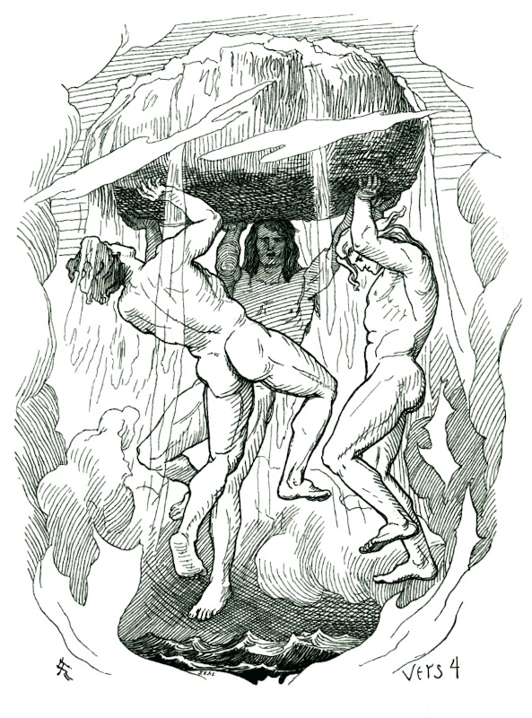

| Creation | |
|---|---|
|
 |
The Creation of the Cosmos
In Norse mythology, the world began as Ginnungagap, the void. In this void, Muspelheim and Niflheim, the lands of fire and ice collided. From that, the cow Audombla was thawed. Another being, the frost giant Ymir thawed. Ymir lived on the milk Audombla supplied, but eventually the cow licked from the ice a man named Buri. Buri had three sons, Odin, Vili, and Ve. They killed Ymir and created the world from his corpse; stones from his bones, water from his blood, earth from his flesh, clouds from his eyebrows, and the sky from his skull. Thus, the world was made.